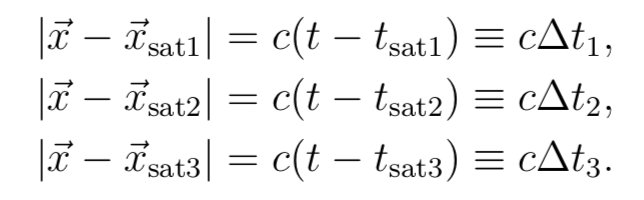

Fikk du disse likningene? Her er Δti tiden det tar for hver av de 3 signalene å gå fra satelitt og frem til mottaker. Vi skal ikke løse disse likningene i sin helhet her, men jeg vi prøve å overbevise deg om at svaret, f.eks. for x-komponenten kommer til å inneholde flere ledd av typen x = et eller annet ganger cΔt1 + ... høres det sannsynlig ut?